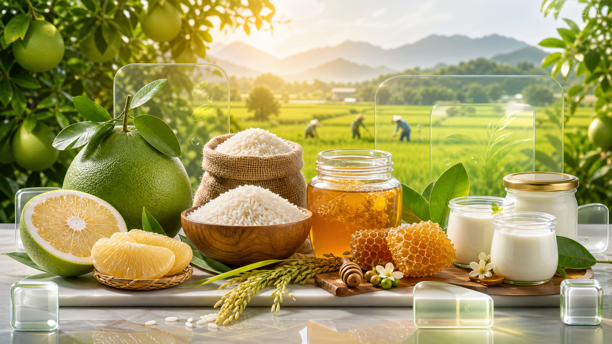

Chia sẻ giá trị
Kết nối người tiêu dùng với chủ vườn, tạo ra nông sản sạch, minh bạch và thu nhập bền vững.
Nền tảng Agricoin mùa vụ
Chia sẻ giá trị - Yêu thương - Minh bạch
Nền tảng kết nối sản phẩm thật, câu chuyện thật và dữ liệu minh bạch cho từng mùa vụ.
Kết nối người tiêu dùng với chủ vườn, tạo ra nông sản sạch, minh bạch và thu nhập bền vững.
Mỗi sản phẩm là một hành động tử tế, chăm sóc gia đình và lan tỏa giá trị nhân văn.
Ứng dụng công nghệ để theo dõi mùa vụ, kiểm soát chất lượng và minh bạch nguồn gốc.

Mô hình đầu tư mùa vụ
Mỗi Agricoin đại diện cho phần giá trị nông sản khách đã đặt trước theo từng sản phẩm.
Gói đầu tư tối thiểu bắt đầu từ 10 Agricoin = 1.000.000đ.
Ví dụ 100.000đ tương đương 1 Agricoin, quy đổi khoảng 3,3kg bưởi tham chiếu.
Khách có thể nhận sản phẩm tại nhà hoặc đưa gia đình về vườn thu hái đúng mùa.
Khám phá vườn
Khám phá các mùa vụ đã có hồ sơ chủ vườn, giấy tờ kiểm định và cách quy đổi Agricoin rõ ràng.
Nhật ký vườn định danh
Mỗi cây, tổ ong, mẻ sản xuất hoặc lô ruộng có mã định danh riêng. AgriShare cập nhật 1 lần mỗi tuần bằng hình ảnh, video thực tế, lịch chăm sóc và mốc thu hoạch. Nguyên tắc cốt lõi: theo dõi đúng nguồn, nhận đúng mùa vụ.
Gốc bưởi được gắn mã để người tiêu dùng thông thái theo dõi xuyên suốt mùa vụ.
Mỗi tuần có hình ảnh và video thực tế về chăm sóc, sinh trưởng, kiểm tra chất lượng hoặc thu hoạch.
Nông sản bàn giao được ưu tiên theo đúng cây/lô/tổ/mẻ mà khách đã chọn theo dõi.
Cộng đồng & trải nghiệm
AgriShare biến việc mua nông sản thành trải nghiệm có kết nối, có câu chuyện và có ký ức gia đình.
Gia đình có thể theo dõi cây lớn lên, đưa con về vườn thu hái và học cách trân trọng nguồn gốc thực phẩm.
Chủ vườn chia sẻ triết lý canh tác, khó khăn thật và niềm tự hào khi trao sản phẩm đúng mùa cho khách.
Nông sản được theo dõi từ nơi sản xuất đến khi trở thành món ăn trọn vị, giúp khách hiểu rõ nguồn gốc và thêm gắn kết với chủ vườn.
Ước tính Agricoin
Công cụ này giúp người tiêu dùng thông thái hiểu nhanh số Agricoin và sản lượng tham chiếu trước khi chọn một mảnh vườn cụ thể.
Mảnh vườn của tôi
Nhập mã đơn AgriShare để xem trạng thái tư vấn, thanh toán, nhật ký vườn, giao nhận sản phẩm và biên nhận của đơn hàng.

Theo dõi đơn đã mua
Sau khi khách gửi đơn Agricoin mùa vụ, hệ thống tạo mã đơn. Khách có thể dùng mã này để kiểm tra trạng thái thanh toán, lịch giao hàng, lịch trải nghiệm farm và nhật ký vườn bằng hình ảnh, video do Admin AgriShare cập nhật mỗi tuần.

Lợi ích cho Chủ vườn
AgriShare giúp chủ vườn mở mùa vụ minh bạch, nhận đặt trước bằng Agricoin, cập nhật nhật ký và kết nối trực tiếp với những người tiêu dùng tin tưởng sản phẩm của mình.